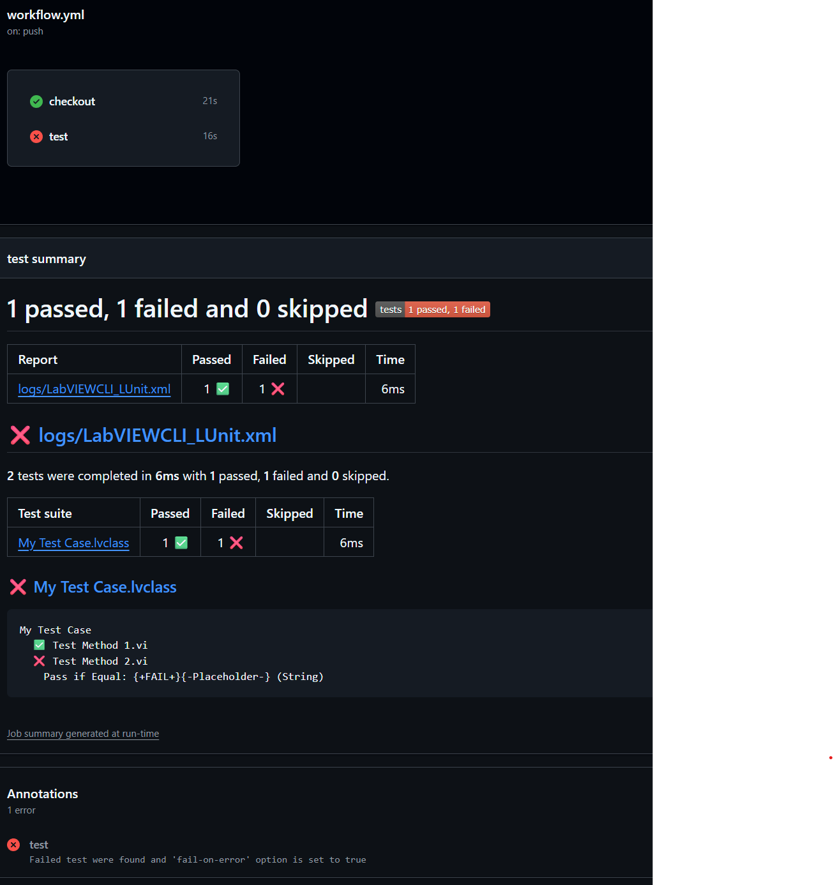

CI Integration
LUnit was designed to easily and natively integrate into continuous integration (CI) pipelines. To achieve this, a way of executing tests from the command line is needed and the results need to be available in a format which may be digested by the CI system.
Executing Tests from the Command Line
The command line interface (CLI) has been migrated out of the main LUnit project. The reason for this is that the CLI is installed on the system level and requires to be installed as administrator. To install the native CLI, please use this package. There is also a G-CLI package, maintained by Sam at SAS Workshops, which can be found here (please note that this document does not apply the G-CLI).
LUnit installs a command line operation using the LabVIEW native LabVIEWCLI by NI.
This operation is named LUnit and may be called using LabVIEWCLI -OperationName LUnit.
An example illustrating the usage of the CLI i provided at ...\LabVIEW 20XX\examples\Astemes\LUnit\LUnit CLI Demo.vi.
A path to load tests from is provided using the -ProjectPath argument and the report directory is specified using the -ReportPath argument.
When executing tests from the command line, the test case index is cleared and re-created by default each time.
This ensures that all inherited test methods are detected*, at the expense of some overhead for test discovery.
The -ClearIndex flag may be used to override this behavior and re-use the index to improve the execution time.
| Argument | Description |
|---|---|
-Path or -ProjectPath |
The project containing the tests to be executed. The interface also accepts libraries or test case classes of types .lvlib or .lvclass. If you provide a directory, all tests within this directory or sub directories will be executed |
-TestRunners |
Specifies the number of parallel test runners to spawn. Default value is 1. |
-ReportPath |
The output path for the report file generated. The execution generates either a .txt-file or an .xml-file, based on the path specified. |
-ClearIndex |
Clear the index and force LUnit to rediscover all tests. Default is True. The index must be cleared to find new tests inherited for a Test Case. |
The LabVIEW CLI uses VI Server and by default it is configured to work on port 3363. You will need to make sure that the connection is not blocked by firewalls.
Capturing the Test Results
Test results are saved in a text based format at the location specified when executing the command line operation.
LUnit has a built in xml-format for test reports which is using the same structure as the one used by JUnit testing framework and specified here.
To use the JUnit xml format, you must provide a file path with the .xml extension.
Once the tests have finished, the result file is available at the specified path.
File may now be digested by most CI tools.
For Jenkins this is done using the JUnit plugin.
GitHub Actions Example
GitHub provides the GitHub Actions CI toolchain, which is very similar to other vendor alternatives such as GitLabs or Azure DevOps. To run your CI pipeline using one of these tools, you would typically setup your own self hosted runner, where you would install LabVIEW, LUnit, and LUnit CLI. A minimal example workflow for running tests and reporting results back to GitHub would look like below, using the dorny test result reporter.
name: 'LUnit Test'
description: 'Runs all LUnit tests under the tests directory using LUnit CLI'
jobs:
steps:
- name: Run LUnit tests
- run: |
LabVIEWCLI `
-OperationName LUnit `
-ProjectPath $env:GITHUB_WORKSPACE\tests `
-ReportPath $env:GITHUB_WORKSPACE\LabVIEWCLI_LUnit.xml `
shell: powershell
- name: Publish Test Report
uses: dorny/test-reporter@v2
if: ${{ !cancelled() }}
with:
name: LUnit Tests
path: LabVIEWCLI_LUnit.xml
reporter: java-junit
When this runs, it will execute the test suite and report results back to GitHub, with a result as below.

Jenkins Example
Jenkins is a popular open source automation server used for continuous integration and delivery pipelines. A pipeline in Jenkins may be configured using a declarative Jenkinsfile which may be saved directly in the repository. Below is an example showing a basic configuration.
pipeline {
agent any
environment{
LV_PROJECT_PATH = "Path to Your LabVIEW Project.lvproj"
NUM_TEST_RUNNERS = "1"
LV_PORT = "3363"
}
stages {
stage('Unit Tests') {
steps {
bat "LabVIEWCLI -OperationName LUnit -ProjectPath \"${WORKSPACE}\\${LV_PROJECT_PATH}\" -TestRunners ${NUM_TEST_RUNNERS} -ReportPath \"${WORKSPACE}\\lunit_reports\\lunit.xml\" -ClearIndex TRUE -PortNumber ${LV_PORT} -LogFilePath \"${WORKSPACE}\\LabVIEWCLI_LUnit.txt\" -LogToConsole true -Verbosity Default"
junit "lunit_reports\\*.xml"
}
}
}
}
The pipeline above declares three environment variables used to configure the call to LUnit using the LabVIEW CLI. The first is the path to the project file relative to the workspace, i.e. the path relative to the root of the repository where the Jenkinsfile is located. The second is the number of parallel test runners to spawn, here configured to one. The third parameter is the port configured for VI server in LabVIEW under Tools->Options->VI Server.
The report is saved in the path lunit_reports using the file name lunit.xml with incrementing index.
After the execution of tests using the bat command the junit plugin is called to digest the report files generated.
This requires that the Jenkins JUnit plugin is installed, which it is by using the recommended default settings when installing Jenkins.
Note that this is a minimal example meant to demonstrate the concept.
It could be improved significantly to reduce the details in the Jenkinsfile using shared libraries.
As an example, the build system used to build LUnit uses a simpler command runLUnit "${LV_PROJECT_PATH}" in the Jenkinsfile in stead of the rather detailed bat command.
* Footnote on Test Finder indexing
The test finder keeps an index of all test methods for all test classes in the project.
When the test finder is started, it loads the index and compares all classes to the index.
If the classes has changed since the index was created, the class will be re-indexed.
As of version 1.0, the test indexer will however not re-index a class when a parent class has added a dynamic test method.
To detect new inherited dynamic method the test index must be re-created, which happens when the -ClearIndex flag is left at default value True.